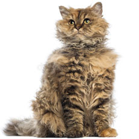
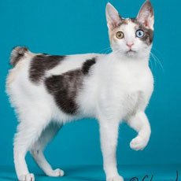
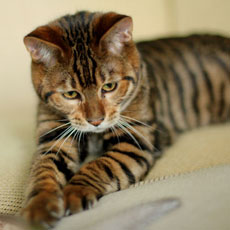
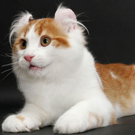
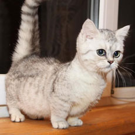
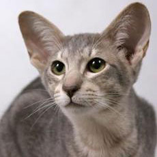

Ocicats have almond shaped eyes, large, strong bodies, muscular legs with
dark markings, and powerful, oval shaped paws. Their heads have a wedge
shape, that is, longer than wide. Their ears are tilted at a 45 degree
angle. One of the most striking things about these cats is the dark
contrasting spots. The body shape of the Ocicat is partway between the
svelte Oriental and the sturdy American Shorthair. The breed's large,
well-muscled body gives an impression of power and strength, and is greater
in weight than expected by appearance. Twelve variants in color are approved
by most registries, including The Cat Fanciers' Association, Inc. standard
for the Ocicat breed: tawny, chocolate and cinnamon, their dilutes, blue,
lavender and fawn, black silver (or ebony silver), chocolate silver, cinnamon
silver, blue silver, lavender silver and fawn silver.
Selkirk Rex

Selkirk Rex
The Selkirk Rex is distinct from all other Rex breeds. Unlike the Devon Rex
and Cornish Rex, the hair is of normal length and not partly missing. There
are longhair and shorthair varieties. It differs from the LaPerm in that
the Selkirk Rex coat is plusher and thicker. While the LaPerm gene is a simple
dominant, the Selkirk gene (Se) acts as an incomplete dominant; incompletely
dominant, allele pairs produce three possible genotypes and phenotypes:
heterozygous cats (Sese) may have a fuller coat that is preferred in the show
ring, while homozygous cats (SeSe) may have a tighter curl and less coat
volume.
Japanese Bobtail

Japanese Bobtail
The Japanese Bobtail is a breed of domestic cat with an unusual "bobbed"
tail more closely resembling the tail of a rabbit than that of other cats.
The variety is native to Japan and Southeast Asia, though it is now found
throughout the world. The breed has been known in Japan for centuries, and
it frequently appears in traditional folklore and art. As in most other breeds,
Japanese Bobtails may have almost any color (or colors, arranged in any number
of patterns). Predominantly-white calicoes are especially favored by
the Japanese and by cat fanciers, and strongly represented in folklore, though
other colorations are also accepted by breed standards.
Toyger

Toyger
The toyger is a breed of domestic cat, the result of breeding domestic
shorthaired tabbies (beginning in the 1980s) to make them resemble
a "toy tiger", as its striped coat is reminiscent of the tiger's. The breed's
creator, Judy Sugden, has stated that the breed was developed in order to
inspire people to care about the conservation of tigers in the wild. It was
recognized for "registration only" by The International Cat Association in the
early 1990s, and advanced through all requirements to be accepted as a full
championship breed in 2007. There are about 20 breeders in the United States
and another 15 or so in the rest of the world, as of 2012.
American Curl

American Curl
The American Curl is a breed of cat characterized by its unusual ears,
which curl back from the face toward the center of the back of the skull.
An American Curl's ears should be handled carefully because rough handling
may damage the cartilage in the ear. The breed originated in Lakewood,
California, as the result of a spontaneous mutation. The first American Curls
appeared as strays on the door step of the Rugas in Lakewood, California in
June 1981. The black female, named Shulamith, gave birth to a litter of cats
with the same curled ears, and so became the ancestor of all American Curls
today. In 1986, an American Curl was exhibited at a cat show for the first
time, and in 1992, the longhaired American Curl was given championship status
by The International Cat Association (TICA). In 1999, the American Curl became
the first breed admitted to the Cat Fanciers' Association (CFA) Championship
Class with both longhair and shorthair divisions.
Munchkin

Munchkin
The Munchkin or Sausage Cat is a new breed of cat characterized by its
very short legs, which are caused by a genetic mutation. Much controversy
erupted over the breed when it was recognized by The International Cat
Association in 1995 with critics voicing concern over potential health and
mobility issues. Short-legged cats have been documented a number of times
around the world since the 1940s. A British veterinary report in 1944 noted
four generations of healthy short-legged cats which were similar to normal
cats except for the length of the legs. This line disappeared during
the Second World War but other short-legged cats were spotted in Russia
during 1956 and the United States in the 1970s.
Javanese cat

Javanese cat
The Javanese, also known as the Colorpoint (or Colourpoint) Longhair in
some registries (though that name has other meanings), is a variety of
purebred domestic cat. It is an Oriental-type, the long-haired equivalent of
the Colorpoint Shorthair. The variety was developed in North America; its
name is derived from the tradition of naming Oriental-type cats after
Southeast Asian places. It is an offshoot of the Balinese breed, out-crossed
to Siamese and Colorpoint Shorthair, and often having coat patterns not
acceptable in those breeds. Individuals may or may not be have point
coloration.